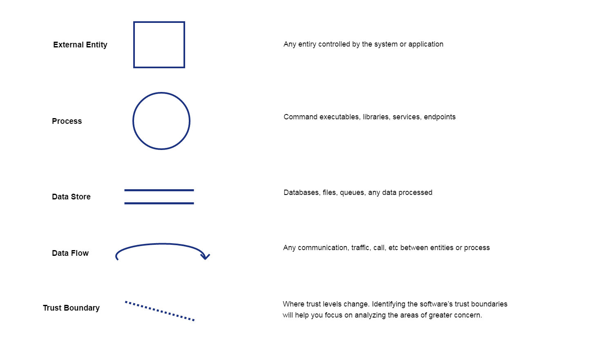

Threat modeling is a process by which potential threats, such as structural vulnerabilities can be identified, enumerated, and prioritized. The purpose of threat modeling is to identify, communicate, and understand threats and mitigations within the context of protecting something of value.
The approach involves creating a diagram, identifying threats, mitigating them and validating each mitigation. Here’s a diagram that highlights this process:

Diagram Elements

Starting the threat modeling process
- Add trust boundaries that intersect data flows
- Points/surfaces where an attacker can interject
- Machine boundaries, privilege boundaries, integrity boundaries are examples of trust boundaries
- Threads in a native process are often inside a trust boundary, because they share the same privs, rights, identifiers and access
-
Processes talking across a network always have a trust boundary
- Iterate over processes, data stores, and see where they need to be broken down
- Add details
- More detail is needed to explain security impact of the design
- Object crosses a trust boundary
- Check and add combinations of things that can be broken out
Diagram layers
- Context Diagram
- Very high-level; entire component / product / system
- Level 1 Diagram
- High level; single feature / scenario
- Level 2 Diagram
- Low level; detailed sub-components of features
- Level 3 Diagram
- More detailed
- Rare to need more layers, except in huge projects or when you’re drawing more trust boundaries
The STRIDE Threat Model
https://docs.microsoft.com/en-us/previous-versions/commerce-server/ee823878(v=cs.20)
When you are considering threats, it is useful to ask questions such as these:
- How can an attacker change the authentication data?
- What is the impact if an attacker can read the user profile data?
- What happens if access is denied to the user profile database?
You can group threats into categories to help you formulate these kinds of pointed questions. One model you may find useful is STRIDE, derived from an acronym for the following six threat categories:
- Spoofing identity. An example of identity spoofing is illegally accessing and then using another user’s authentication information, such as username and password.
- Tampering with data. Data tampering involves the malicious modification of data. Examples include unauthorized changes made to persistent data, such as that held in a database, and the alteration of data as it flows between two computers over an open network, such as the Internet.
- Repudiation. Repudiation threats are associated with users who deny performing an action without other parties having any way to prove otherwise—for example, a user performs an illegal operation in a system that lacks the ability to trace the prohibited operations. Nonrepudiation refers to the ability of a system to counter repudiation threats. For example, a user who purchases an item might have to sign for the item upon receipt. The vendor can then use the signed receipt as evidence that the user did receive the package.
- Information disclosure. Information disclosure threats involve the exposure of information to individuals who are not supposed to have access to it—for example, the ability of users to read a file that they were not granted access to, or the ability of an intruder to read data in transit between two computers.
- Denial of service. Denial of service (DoS) attacks deny service to valid users—for example, by making a Web server temporarily unavailable or unusable. You must protect against certain types of DoS threats simply to improve system availability and reliability.
- Elevation of privilege. In this type of threat, an unprivileged user gains privileged access and thereby has sufficient access to compromise or destroy the entire system. Elevation of privilege threats include those situations in which an attacker has effectively penetrated all system defenses and become part of the trusted system itself, a dangerous situation indeed.
Tools
I bring two tools that can be used to define and identify the attack vector in an specific scenario, platform or environment.
Microsoft Threat Modeling Tool 2016
Microsoft Threat Modeling Tool 2016 is a tool that helps in finding threats in the design phase of software projects. It’s available as a free download from the Microsoft Download Center. This latest release simplifies working with threats and provides a new editor for defining your own threats. Microsoft Threat Modeling Tool 2016 has several improvements such as New Threat Grid, Template Editor & Migrating Existing Data Flow Diagrams.
https://www.microsoft.com/en-us/download/details.aspx?id=49168

OWASP Threat Dragon
An online threat modelling web application including system diagramming and a rule engine to auto-generate threats/mitigations. The focus will be on great UX a powerful rule engine and alignment with other development lifecycle tools.
https://www.owasp.org/index.php/OWASP_Threat_Dragon
https://github.com/mike-goodwin/owasp-threat-dragon

Ent
An attack tree generator built on electron
https://github.com/jimmythompson/ent
Seamonster
SeaMonster is a security modeling tool for threat models. It supports notations that security experts and analyzers are already familiar with, namely attack trees and misuse cases, and can connect to a repository for model sharing and reuse.